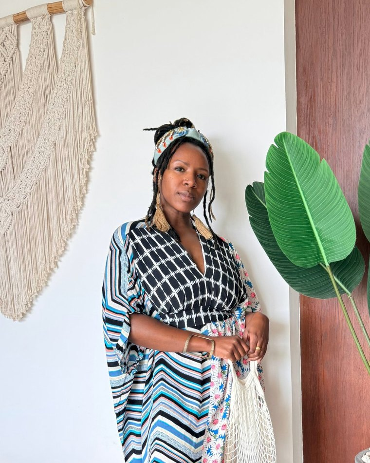

Stay or leave. Quit or keep going. Move or come home. You've argued both sides a hundred times and you're no closer, because you can't tell if what you feel is doubt, or your answer.
You go back and forth. Some days you're sure, and some days the sureness looks like fear wearing a costume. You've made the case for leaving a hundred times. You've made the case for staying just as many. Every argument has a good answer, the good answers cancel each other out, and you end up exactly where you started, only more tired.
And it's a particular kind of tired. Sleep doesn't touch it. A vacation doesn't touch it. It's the weight of a decision you've been carrying for months, maybe years, mostly alone.
Maybe it's your marriage. Maybe it's the career you spent fifteen years building and can't picture doing for fifteen more. Maybe it's the country you live in, or the one you left and keep thinking about going back to. Maybe it's a yes you've never let yourself want out loud.
You've written the resignation email. It's still sitting in drafts.
You've priced one-way flights more than once, then closed the tab.
You've rehearsed the conversation in the car. You still haven't had it.
You've pictured next year somewhere else, doing something else, then talked yourself back.
You've wanted something for years and never said it, because saying it means you'd have to do something about it.
You're the one typing "how to make a big life decision" at midnight and closing the tab feeling worse than when you opened it.
Some days you're certain it's time. Some days you're certain you're being ungrateful. You can't tell if wanting to stay is contentment or the fear of starting over at this age. You can't tell if wanting to go is clarity or just the exhaustion talking.
Different days, different arguments, the same place. Standing at the crossroads, unable to trust your own read of it.
I've stood at more than one of these. I've decided from the fog, and I've decided from the clear.
I left my marriage because leaving felt like the only way to get clear. I couldn't stand the not-knowing one more day, and divorce was the only door out of the fog I could find. Then the bridal business I'd spent ten years building closed, and I got on a plane for what I was still calling a trip.
Years later, in San Miguel de Allende, I stood at a different fork: whether I'd let myself want to be married again. That time I didn't run from it. I stayed with the question until I could hear my own answer, and I decided. Nothing on my calendar changed. The tired I'd been carrying for years started to lift.
That's what I want for you. Whatever you decide, I want it made by a woman who knows her own mind, from clarity instead of exhaustion.
Every kind of help I found had already picked an answer. A career coach assumes you're changing careers. A relocation consultant assumes you're moving. A relationship coach is built to save the marriage or to get you out of it. They're good at what they do, and every one of them starts after the decision is made.
Therapy held my feelings, and I needed that. I'd still leave each week having felt a great deal and decided nothing, standing at the same fork.
What I needed sat in between. Support that moved forward, from someone with no stake in the verdict.
Right now everyone you can talk to has a stake in the answer. Your partner. Your family, who'd miss you or worry about you. Your friends, who already lean one way. The people at work. Each of them hears your decision through what it would mean for them.
And every time you say the hard part out loud, it changes how they see you and your life, over a decision you may not even make. Some of them will never unsee it.
This is a place outside all of that. Someone with no stake in which way you go, so you can be completely honest and see the thing clearly, before you say a word to anyone who's in it with you.
Start with a letter. Nothing is scheduled,
and nothing is decided.
Five private weeks of thinking it through, with someone.
This is one-to-one work. Just you and me, for five weeks, moving through HerSeasonReoriented™, the first phase of my HerRewrittenSystem™ and the work I use to get a woman clear on who she's actually been before she makes a decision as her. I'm not here to tell you to stay. I'm not here to tell you to go. I'm here so you stop having to figure it out alone, and so the decision gets made by a woman who knows her own mind again.
We take an honest inventory of the woman you've been functioning as inside the life you're living. The roles, the performances, the patterns you run without thinking. No analysis and no fixing yet. Just a clear look at her.
Where did she come from. We follow the conditioning back and map the script you've been living, who wrote it, and what it was for. This isn't blame. It's archaeology, and it explains more than you expect.
What has this identity been protecting, and what has it cost you. This is where we find the hidden payoff, the reason you've kept it running long after it stopped fitting. For most women this is the week the fog lifts.
You give her a full and honest name. You acknowledge what she's been, you honour what she was protecting, and you decide what you're retiring: the version of you that couldn't see straight, whichever way the decision goes.
You name who you're becoming instead. And then you bring the decision to her, because she's the one who can actually read it. Whatever she decides, stay or go, it's hers, and it holds.
Whether your read turns out to be stay, go, or something you hadn't considered, you get there yourself. I don't hand you a verdict.
Built for a woman with no room left in her week.
If your crossroads is your marriage, I wrote a page just for you.
Slowly, and with the tired taken seriously. Exhaustion makes every option look worse, so the first weeks aren't about the decision at all. We look at the woman who's been carrying it. Most women find the decision gets clearer once they can see her. You don't need energy to start. You only need to write me a letter.
That's the most common place to start. Not knowing usually means you've been living as a version of yourself whose wants are louder than yours. Weeks one to three are built for exactly that.
No. This is yours. Nothing arrives in the mail, nothing shows up on a shared calendar, and a Telegram thread is a thread like any other on your phone.
Then you stay, from a settled place with your eyes open, which is a different life than the one you're in right now. Staying is a real outcome of this work, and my job doesn't change either way.
No. I don't build your résumé or your business plan. I help you get clear on who's making the decision, so the decision is yours. If you leave a career, the strategy comes after, and I'll tell you honestly when you're ready for it.
No, and I'm careful about the difference. I'm an identity and reinvention mentor, not a therapist. Therapy tends to the wound and the nervous system. I work on who you've become and what she can see. If you're already in therapy, this sits alongside it, and plenty of women run both.
Because a scheduled call asks you to be ready on someone else's clock, and you're not in a season where that's easy. Voice carries far more than text does, so you get the warmth of a conversation while answering when you have the energy for it. If you'd rather talk live at some point, we can.
A few. This is one-to-one and I'm the whole delivery, so the number is small by design. If I'm full when you write, I'll tell you and offer you the next opening.
Then we pause and pick it back up. Life doesn't stop for five weeks, and a week where you can't think is information rather than a failure. Tell me and we move the thread.

I work with women whose lives have stopped matching who they've become. The marriages, the careers, the countries, the versions of themselves they built for a season that's over. My work is identity first, because every other decision gets made by whoever you currently think you are.
I've left a marriage, closed a business and left the country. I know what it costs to decide from the wrong place. I'm not a therapist and I don't pretend to be one. What I am is unbiased, patient, and completely on your side, which is the thing I couldn't find when I needed it.
Certified in life, confidence and transformational coaching.
There's no checkout button on this page. This isn't something you buy on an impulse at midnight.
You write to me first. Tell me where you are, in as few or as many words as you have. It doesn't have to be neat, and you don't have to have it figured out, because that's the whole reason you're here.
I read every letter myself. If it's a fit, I write you back and we talk it through a little before anything else happens, by voice note on your own time, or a call if you'd rather. If it isn't a fit, I'll tell you plainly and point you toward what might serve you better.
This opens a private page where you can write
as little or as much as you have.
Or write me directly at que@nextseasonher.com
I take three women at a time.
You're standing in front of decisions about where you live, how you earn, who you build your life beside, and who you'll be for the next twenty years. Most of them are hard to undo. Five weeks of getting clear first is a small thing next to what it costs to decide these from the fog, and I know what that costs because I paid it.
Start with a letter. Nothing is scheduled,
and nothing is decided.